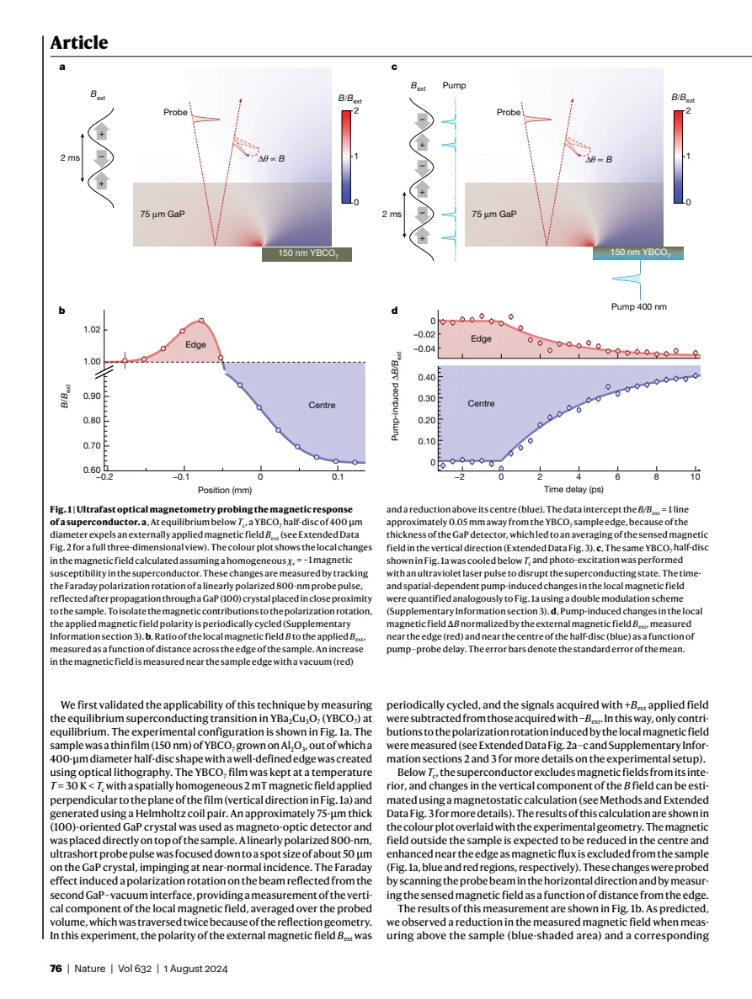
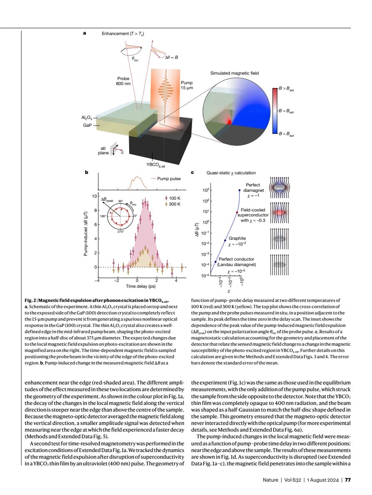
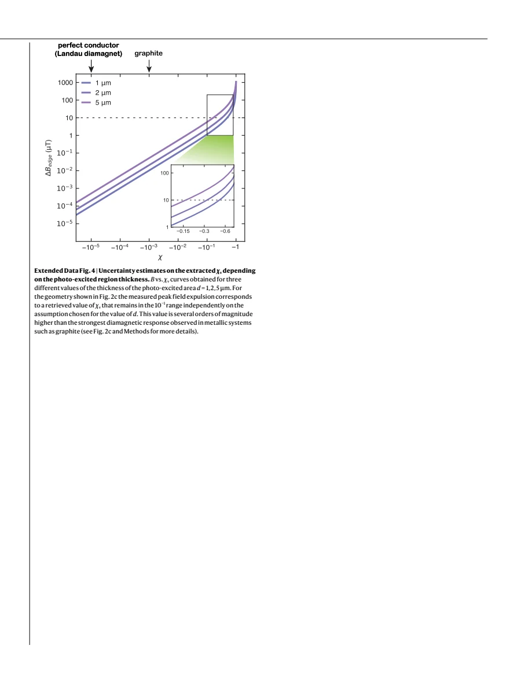

experiment · Fava · supplied source 2024
Magnetic field expulsion in optically driven YBa₂Cu₃O₆.₄₈
A picosecond field enhancement outside the driven region provides magnetic evidence for a large transient diamagnetic response, with model-dependent magnitude and unresolved superconducting mechanism.
The question: Can magnetic measurements distinguish a light-induced superconducting-like state from a transient high-mobility conductor?
Before you start: the few terms you need
- Faraday rotation: polarization rotation proportional to magnetic field in the detector
- Meissner response: expulsion of a pre-existing field, distinct from opposing only changes in flux
- pump–probe: excitation and delayed observation of a short-lived state
See → explain → test
Understand it in four pictures.
Picture 1 / 4
Validate the sign using equilibrium superconductivity
Look for: Compare a superconducting region's center and edge, then disrupt it with light.
Swipe across the picture to read every label, or enlarge it below.
- Equilibrium field expulsion
- Optical disruption below Tc
Teaching sign comparison of the calibration measurements, not a spatial field calculation.
Field expulsion enhances the field outside an edge; destroying superconductivity gives the opposite change.
Check the original: PDF p. 2 · PDF p. 3 · PDF p. 14 · PDF p. 15
Picture 2 / 4
Protect and modulate the detector
Look for: Follow the drive, shielding, field reversal and Faraday readout.
Swipe across the picture to read every label, or enlarge it below.
- 15 μm drive on YBCO
- Shield GaP detector
- Reverse applied field
- Measure delayed rotation
Pump and field double modulation rejects field-independent pump contributions.
The controls isolate an applied-field-dependent response from pump-induced detector artifacts.
Check the original: PDF p. 3 · PDF p. 4 · PDF p. 7 · PDF p. 11 · PDF p. 17
Picture 3 / 4
Measure a transient near the edge
Look for: Compare the observed field change with the assumed susceptibility calculation.
Swipe across the picture to read every label, or enlarge it below.
- Positive edge pulse ~1 ps
- Geometry/depth calibration
- Large inferred diamagnetism
The teaching chain distinguishes measured ΔB from calculated susceptibility.
The raw magnetic pulse is measured; χ ≈ −0.3 is a quasi-static estimate requiring geometry and depth assumptions.
Check the original: PDF p. 3 · PDF p. 4 · PDF p. 7 · PDF p. 13 · PDF p. 16
Picture 4 / 4
Keep two superconducting scenarios open
Look for: Contrast forming a transient state with amplifying existing superconducting fluctuations.
Swipe across the picture to read every label, or enlarge it below.
- Transient superconducting phase
- Amplified pre-existing fluctuations
Author-discussed alternatives; neither proves a persistent equilibrium room-temperature superconductor.
The paper favors superconducting correlations but does not uniquely distinguish these nonequilibrium mechanisms.
Check the original: PDF p. 5
Predict before revealing
The inferred χ is about −0.3 and the signal lasts about 1 ps. Which statement respects the evidence?
Choose an answer, then compare the reasoning.
This is a magnetic measurement with strong controls, but it probes a short-lived nonequilibrium state and uses a conditional susceptibility conversion.
Read the answer
A large transient diamagnetic response supports driven superconducting correlations, with mechanism and calibration limits This is a magnetic measurement with strong controls, but it probes a short-lived nonequilibrium state and uses a conditional susceptibility conversion.
Go deeper Follow the full argument
The magnetic question behind the experiment
Fava and colleagues address a limitation of earlier optical measurements: a transient conductivity resembling superconductivity can be difficult to distinguish from greatly enhanced carrier mobility. They ask whether a driven YBCO6.48 crystal expels a field that is already applied before excitation. A perfect conductor resists changes of flux, whereas a Meissner-like state can rearrange a pre-existing field. Their detector is a GaP crystal placed close to the sample; delayed 800 nm probe pulses acquire Faraday rotation while traversing it. The detector measures a spatially averaged component of the external local field, not the internal magnetic field directly. Its sensitivity is better than roughly 1 μT with picosecond time resolution, enabling a magnetic test matched to the transient optical lifetime.
Calibration and artifact controls
An equilibrium YBCO7 thin-film half-disc validates the expected field reduction above the sample and enhancement outside its edge. Destroying superconductivity with a 400 nm pump reverses those signs. In the driven experiment a YBCO6.48 crystal exposes an ac face, allowing a 15 μm pulse to drive along c while the static field lies along the planes. Reflective Al₂O₃ shields protect the GaP detector and define a sharp excitation edge. Field reversal and pump modulation produce a double-differential signal that removes field-independent pump contributions. Detector crystal orientation suppresses electro-optic contamination, and probe-polarization independence supports the Faraday assignment. Moving excitation away from YBCO eliminates the response. These controls are central evidence, rather than incidental experimental details.
PDF p. 2 · PDF p. 3 · PDF p. 4 · PDF p. 7 · PDF p. 8 · PDF p. 11 · PDF p. 14 · PDF p. 15 · PDF p. 17
What is observed above the equilibrium transition
At base temperatures of 100 and 300 K, both above the sample's equilibrium Tc near 55 K, the drive produces a positive local-field pulse outside the excited region. Near 100 K its peak is about 10 μT for an applied field of order 10 mT, while the room-temperature pulse is smaller, about 3 μT. The signal lasts around a picosecond, comparable with the superconducting-like optical response under related conditions. It weakens with increasing temperature, increases monotonically with the applied field up to 12.5 mT, and vanishes near zero applied field. Fluence dependence is sublinear over the measured range. These observations establish a transient, drive-dependent magnetic response; they do not describe a stationary room-temperature material that remains superconducting after the light is removed.
How a susceptibility is inferred
Magnetostatic finite-element calculations relate the measured external field to a homogeneous susceptibility assigned to the excited half-disc. They include detector-thickness averaging and probe-spot convolution. Assuming an excited depth of 2 μm gives a susceptibility of order −0.3; testing depths of 1 and 5 μm keeps its magnitude in the 10⁻¹ range. This is many orders larger than ordinary metallic Landau diamagnetism in the comparison model. However, the authors explicitly state that quasi-static calibration is not fully justified for a change occurring in about one picosecond. Indeed, farther from the edge the pulse arrives later and is attenuated, consistent with a propagating electromagnetic wave moving at the GaP group velocity. The estimate is therefore a scale comparison with stated assumptions, not a direct equilibrium susceptibility measurement.
The remaining physical interpretation
The authors conclude that the large diamagnetic response supports photo-enhanced superconducting correlations rather than mobility enhancement alone. They discuss two mechanisms: a transient superconducting phase, or amplification of pre-existing local superconducting fluctuations and diamagnetic currents in the pseudogap state. The second would be a distinctly dynamical phenomenon. The supplied Methods and all nine Extended Data figures provide calibration, spatial controls, penetration-depth uncertainty, temperature traces and fluence dependence, so they are essential to assessing that claim. A separate Supplementary Information file referenced for detailed apparatus and sample characterization is not included in this PDF. Keep the finite lifetime, restricted excited volume, dynamic propagation and model-dependent susceptibility in view when describing the result as evidence for driven superconductivity; the experiment does not uniquely settle its microscopic mechanism.
PDF p. 5 · PDF p. 7 · PDF p. 8 · PDF p. 10 · PDF p. 11 · PDF p. 12 · PDF p. 13 · PDF p. 14 · PDF p. 15 · PDF p. 16 · PDF p. 17 · PDF p. 18
Translate the mathematics Key equations and symbol meanings
ΔθFaraday ∝ ∫path B∥(r,t) dℓ
Symbols: B∥: field component along optical propagation; integral includes the double pass through GaP.
Teaching form of the Faraday readout. The measured rotation averages the field over detector depth and probe spot.
χcalc ~ −0.3 for assumed excited depth d = 2 μm
Symbols: χcalc: quasi-static volume susceptibility estimate; d: modeled photo-excited thickness.
A geometry-dependent scale estimate. Varying d from 1 to 5 μm retains order 10⁻¹ magnitude, while ultrafast dynamics limit static interpretation.
vpulse ≈ c/ng
Symbols: ng: group index of GaP near 1 THz.
Arrival-time versus distance behavior supports propagation of the measured magnetic pulse, rather than instantaneous static redistribution everywhere.
Read the evidence A guided look at the original figures

Open the full original page ↗

Open the full original page ↗

Open the full original page ↗
What this paper does—and does not—establish
- The measured state is transient and occupies a shallow driven region.
- Susceptibility conversion assumes geometry, penetration depth and approximate quasi-static response.
- Formation of a transient phase and amplification of pre-existing superconducting fluctuations remain alternative mechanisms.
- Separate Supplementary Information is referenced but not included in the supplied PDF.
Explain it back.
Try answering aloud before opening the explanation.
Why observe outside an edge?
Expelled field can enhance the local external field there, providing a sign calibrated using an equilibrium superconductor.
Why reverse the applied field?
It isolates field-dependent Faraday contributions and rejects field-independent signals directly induced by the pump.
Why is χcalc not a direct equilibrium measurement?
It comes from a homogeneous quasi-static geometry model applied to an ultrafast, propagating response.
Connect the next paper.
Source version, reading coverage and preservation
Complete 18-page PDF read, including Methods on pages 7–8 and all nine Extended Data figures/captions on pages 10–18; rendered main figures on pages 2–4 and every Extended Data page inspected.
Reviewed body pages: 1, 2, 3, 4, 5, 6, 7, 8, 9, 10, 11, 12, 13, 14, 15, 16, 17, 18. The separate Supplementary Information file and external optical source datasets are not supplied and were not independently reviewed.
Original file retained byte for byte. SHA-256: de1db521238a84eda82970b70a6c770a28acb53980cab40e60a7cc203307fcd0
Filename: Nature - Fava - Magnetic field expulsion in optically driven YBCO - 2024.pdf.